ペンツールで切り抜き
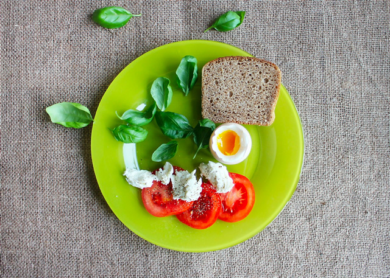
ペンツール
- Illustratorとほぼ同じ機能
- ペンツールで一筆書きとして輪郭を形作る
- 開始点に戻ってクリックすると、その閉じられた形が「ベクトルマスク」になる
※写真の上をペンツールで線を描画するため、見えにくいの難点です。
（PCの画面の大きさにもよります）
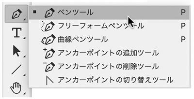
パスの色を変更
- パスを見やすい色に変更します。
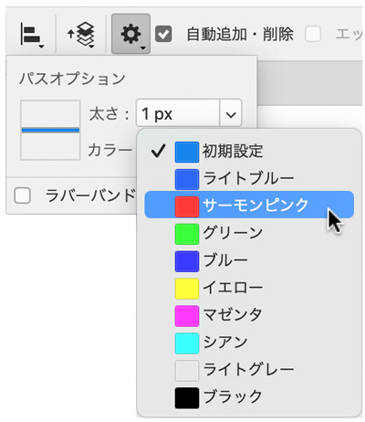
- 「ラバーハンド」は、ペンツールの操作感によって必要ならチェックします。
- Illustratorと同様、輪郭を一筆書きの状態にします（途中で、切れると切り抜きに使用できません）
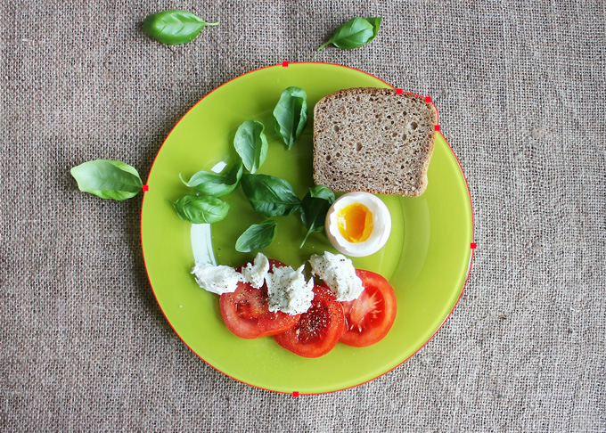
パスに名前をつける
- 輪郭を完成させると、パスパネルには「作業用のパス」という一時的なパス名がつきます
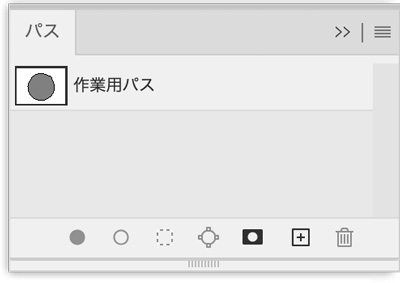
- 輪郭がペンツールで閉じられると、パスパネルには「作業用のパス」という名前のパスレイヤーが作成されます
- そのレイヤー名をダブルクリックして名前を変更します
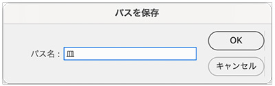
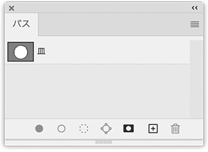
パスを選択範囲にする
- このパスのサムネイルを「Ctrl ＋ クリック」して選択範囲にします
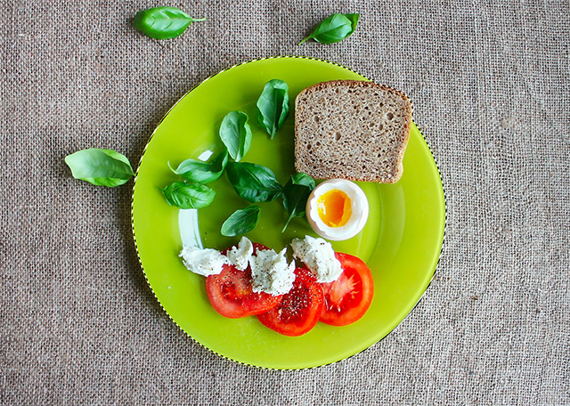
選択範囲をレイヤーマスにする
- 選択範囲ができているときに、レイヤーパネルの「レイヤーマスク」アイコンをクリックします
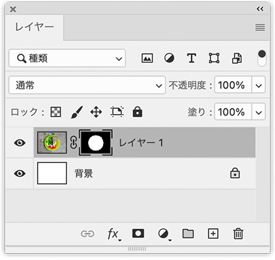
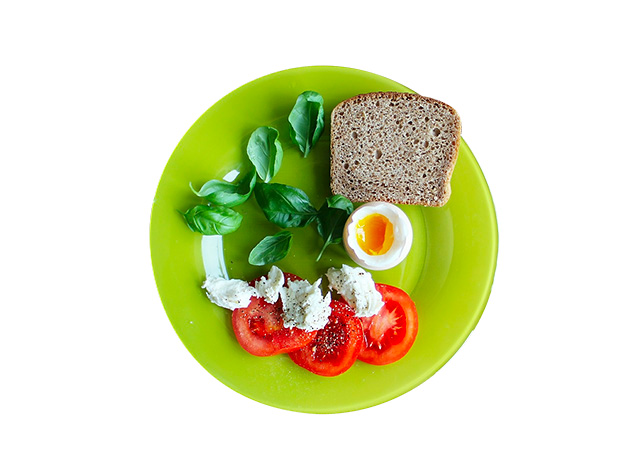
ECサイトでの切り抜き写真
- 商品単体の写真は、切り抜き写真が基本です
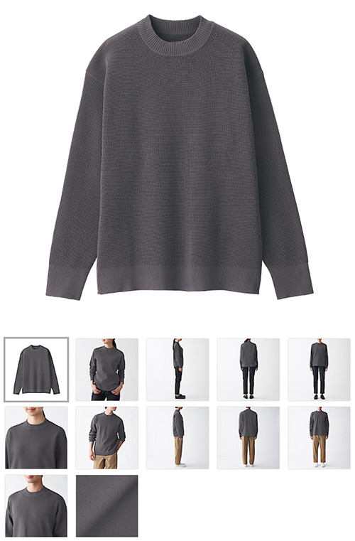